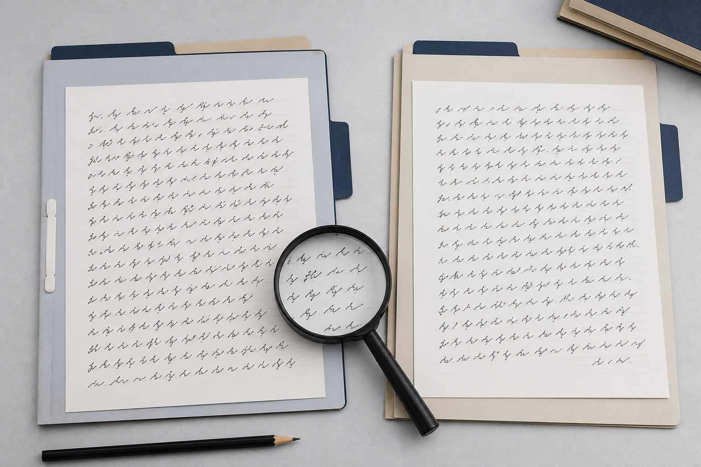

手写文件扫描分辨率怎样设置？
扫描手写文件时怎样选择分辨率、颜色模式和文件格式，并检查浅色笔画、裁边和压缩问题。

扫描手写文件时怎样选择分辨率、颜色模式和文件格式，并检查浅色笔画、裁边和压缩问题。
手机拍摄手写样本时，应保持页面端正、光线均匀，并同时保存完整页、局部图和未经压缩的原始照片。

多份手写样本可以先按签字、正文和批注分类，再按时间、使用场景和文件载体建立清单。

选择签字样本时，应优先保留多份自然签写，分开正式版与简写版，并拍摄完整页面和清晰细节。
JPG、PNG和PDF适合不同的手写文件用途，原始照片、透明图和多页浏览文件应分别保存。